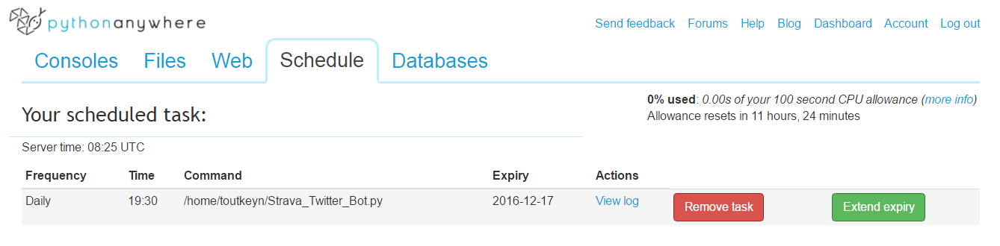

A Strava Segment Twitter Bot
 Brussels Strava Bot is a twitter bot that performs daily checks for changes in Strava’s (a popular running app) segments’ leaderboards changes.
Brussels Strava Bot is a twitter bot that performs daily checks for changes in Strava’s (a popular running app) segments’ leaderboards changes.
What is a bot anyway?
Because the word tends to be way overused, agreeing on a definition is always a first step, therefore by bot I will always imply the following:
A bot is an application that performs an automated task across disparate systems
Tasks are usually thought of as being time-based and performed by a cron, a job scheduler in Unix-like computer operating systems. However, if you think of IT automation as the linking of disparate systems and software in such a way that they become self-acting or self-regulating, your fridge (that self-adjusts for a given temperature) or even my henhouse’s door (that opens as the sun rises) are “bots”.
If you think of IT automation as the linking of disparate systems and software in such a way that they become self-acting or self-regulating, your fridge is a “bot”
How to harness social media’s data to create (almost-always-useless) bots?
Example here: perform a periodic check of Strava’s segments’ leaderboards
1
2
3
4
5
6
7
8
9
10
11
12
13
14
15
16
17
18
19
20
21
22
23
24
25
26
27
28
29
30
31
def get_last_pairs():
c.execute("SELECT * FROM duo")
return(c.fetchall())
def get_changed_leaders(rows):
changes = []
for eachRow in rows:
url = "https://www.strava.com/api/v3/segments/"+str(eachRow[0])+"/leaderboard"
header = {"Authorization": stravaAuth}
r = requests.get(url, headers=header)
update = r.json()
#Compare them with last DB version, capture changes
if "entries" not in update.keys():
print(update)
raise SystemExit()
elif not update["entries"]:
print("Can't find leaderboard for segment "+str(eachRow[0]))
elif update["entries"][0]["athlete_id"] == eachRow[1]:
pass
else:
change = []
change.append(eachRow[0])
change.append(update["entries"][0]["athlete_name"])
change.append(update["entries"][0]["athlete_id"])
change.append(update["entries"][0]["elapsed_time"])
change.append(update["entries"][0]["distance"])
changes.append(change)
return(changes)
When and how is this task run?
In this case, the job is run using Python Anywhere, it is service that allows one to host, run, and code Python in the cloud. They have a free “beginner” plan.

What is the task performed when a segment record has been beaten?
Our bot will tweet the update, letting the world know that the king is no more with some spicy hashtags (#recovery is a solid choice)
1
2
3
4
5
6
7
8
9
10
11
12
def tweet_changes(changes, api):
if not changes:
api.update_status(random.choice(nochange))
else:
api.update_status("We have "+str(len(changes))+" new leader(s) today! #strive #gameon")
for change in changes:
firstName = change[1].split(" ",1)[0].decode('utf8', errors='ignore')
segmentShortUrl = shorten_url("https://www.strava.com/segments/"+str(change[0]))
#Generate a status with the different elements and tweet it
status = firstName + " " + random.choice(middle) + " " + segmentShortUrl + " " + random.choice(hashtags)
api.update_status(status)
Marc got himself a segment record https://t.co/qWRsudIdsx #recovery #wasnteventrying #stravarun #stravabrussels
— Brussels Strava Bot (@StravaBrussels) November 25, 2016
Can our bot automatically add segments to scan?
Indeed! Users can tweet (following a given format) their requests
@StravaBrussels add 7179498
— Robin Rampaer (@rrampaer) November 17, 2016
What else can a bot do?
Anything you find useful and/or funny. You could think of a bot that:
- tweets you when your dream camera is on sale, so that you don’t have to press F5 every day.
- buys and sells stocks according to your predefined investment strategy
- books tickets as soon as they are available
- spams the hell out of people on all socia media (disclaimer: don’t)
Know when I post
I email once per quarter